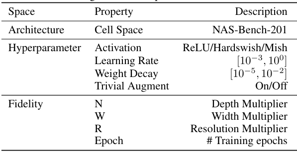

Design Space
The design space of JAHS-Bench-201 has two components: the search space and the fidelity space. The search space comprises the joint architecture and hyperparameter space of the JAHS problem, whereas the fidelity space comprises parameters that directly alter the training cost with some trade-off in performance. We include these fidelity parameters in our design space to support benchmarking of multi-fidelity algorithms.
For an overview of our design space see this table:

Architecture Space
We use the cell-based architecture search space from the popular and widely used tabular benchmark NAS-Bench-201, which uses a directed acyclic graph with 4 vertices and 6 edges connecting them, for each of which there is a choice between an operation from the set of { skip-connect, zero, 1x1-conv, 3x3-conv, 3x3-avg-pool }. This accounts for a total of 5^6= 15.625 possible architectures. For an illustration adapted from the authors of NAS-Bench-201 see below.

Hyperparameter Space
Our hyperparameter space consists of a mix of categorical and continuous hyperparameters. As categorical hyperparameters, we added a choice between 3 activation functions (Mish, Hardswish or ReLU) in the convolution layers, as well as the choice to enable or disable the use of Trivial Augment for data augmentation in the training pipeline. For continuous hyperparametwe, we added the choice of learning rate and weight decay.
Fidelity Space
To support benchmarking of multi-fidelity algorithms, we consider four fidelity parameters that alter the training cost and performance: two architectural parameters controlling the network's modelling capacity, one to control the size of the input, and finally, the number of training epochs. Each cell may be repeated N in {1, 3, 5} times within a single block of the neural architecture. We call N the depth-multiplier. The first convolution layer of any cell contains W in {4, 8, 16} filters, with the number of filters doubling in every subsequent convolution layer in the same cell. Thus, we call W the width-multiplier. Additionally, we scaled the input images to different resolutions beforehand. This is denoted by the resolution-multiplier R in {0.25, 0.5, 1.0}. We can query the performance of every configuration at any epoch up to epoch 200. Therefore, we can use the number of epochs as a fidelity parameter, epoch in {1, 2, ..., 200}.
In Code
Configurations in our Joint Architecture and Hyperparameter (JAHS) space are represented as dictionaries, e.g.,: